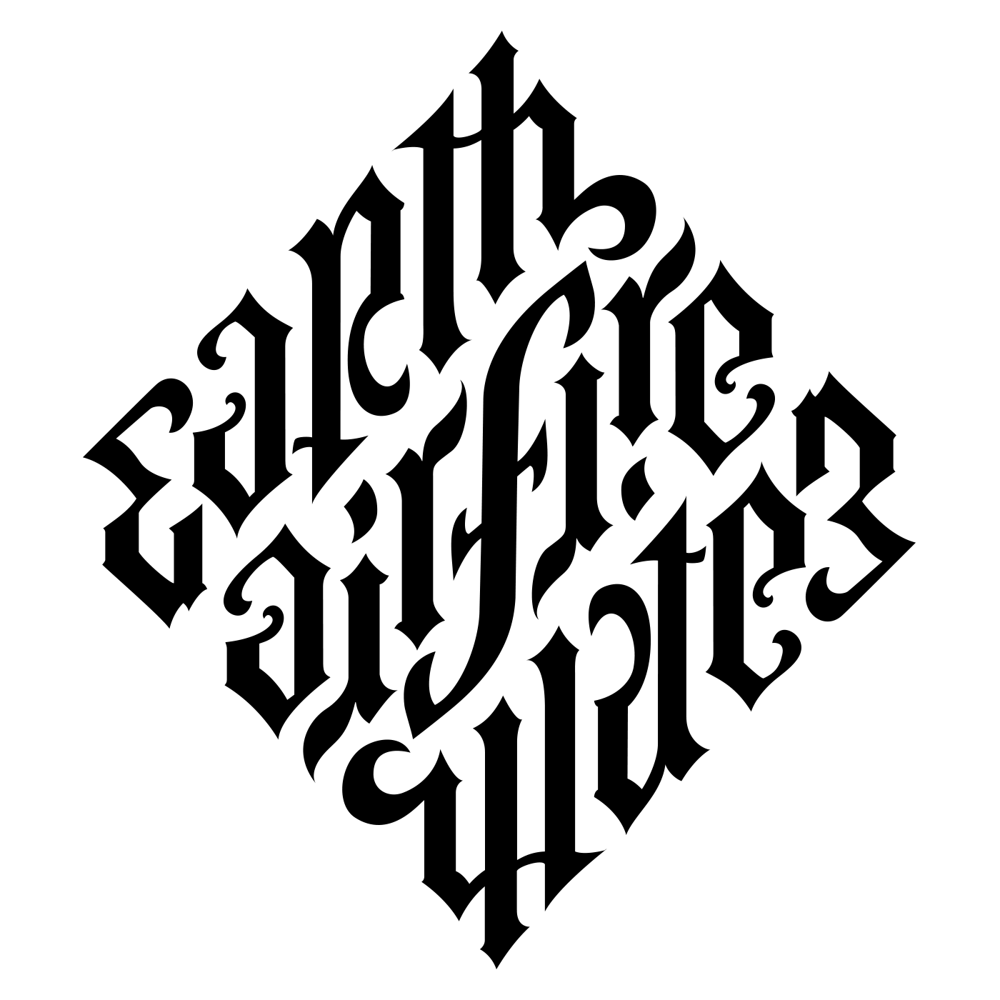
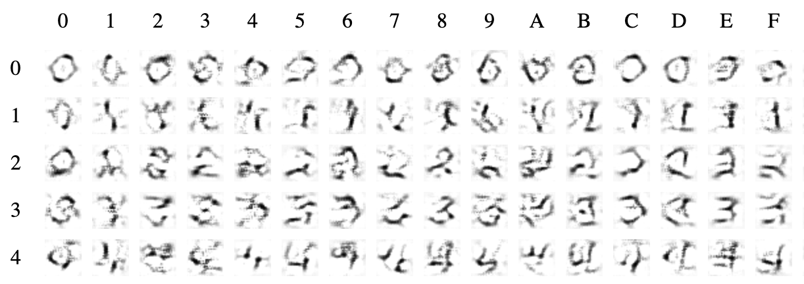
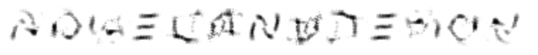
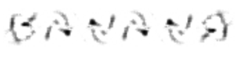
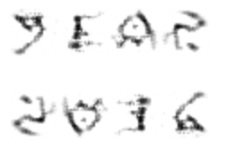
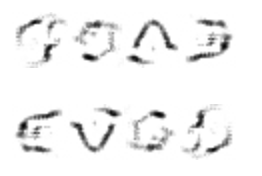
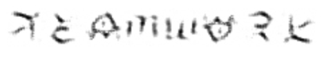
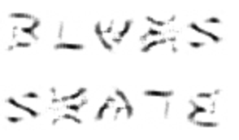
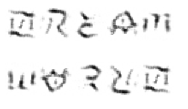

Words that do Handstands
Dreaming ambigrams by gradient descent
Monday, August 26, 2019 · 2 min read
The other day I ordered a book on art history from Amazon… which reminded me of the movie Angels and Demons, which reminded me of ambigrams. Ambigrams are those stylized words that look the same when you turn them upside down. Here is the classic, by John Langdon.

I’ve been thinking a lot about the absurd power of gradient descent these days, and so almost immediately I felt the need to try and synthesize ambigrams on-demand by gradient descent.
It turns out that this isn’t too hard to implement. Let’s start with just single-character ambigrams. Here’s the plan: first, we train some sort of neural net to recognize characters. This training is by gradient descent on the weights / convolution filter / whatnot; specifically, we imagine a function of the weights that outputs some loss and take its derivative with respect to the weights to do gradient descent. Once the neural net is trained, however, we can just treat it as a single function from tensors (input image) to tensors (a one-hot encoding of the classification… or some softmaxed approximation). Taking that one-hot output and converting it into a cross-entropy loss against some desired output, we can now do gradient descent to minimize this loss with respect to the input image (keeping the weights constant). This process lets us “dream” of images representing whichever characters we want.
Similarly, we can do the same thing but with the tensor turned upside-down, to dream images of upside-down characters. Okay, so now we can just combine these two processes — literally, by adding the loss functions — to dream an image that matches one character right-side-up and another character upside-down. That’s it! Now we let it run all day to generate an image for each alphanumeric character pair (36^2 = 1296) and we start to get a nice little “ambigram font”:

Combining letters from this “font” lets us make arbitrary ambigrams.
This was a low-effort operation, hacked together over an evening and a morning, plus a full day of “training.” I’m sure it’s possible to do better. Here are some technical notes for anyone who wants to have a go at it. My code is all online, here.
- It’s all written in PyTorch. The neural net itself is literally PyTorch’s built-in MNIST example.
- I used the EMNIST dataset, which is MNIST that also adds in the alphabets from the NIST database (and comes with PyTorch). I used the “balanced” split.
- I added an L1 regularizer to force the output images to be sparse, i.e. mostly “blank paper” with some “ink.” Without this, you get very dark images.
Okay, now time for some pictures. Some turned out better than others, and there is plenty of scope for improvement…
P.S. Depending on your browser, images in this post may or may not flip upside-down automatically if you hover over them.
ANGEL AND DEMON

BANANA

YEAR, 2016

GOOD, EVIL

TEAMWORK

BLUES, SKATE

DREAM, WORLD

Update (3/26/20): Alex Pietrow created a website that lets you use this font to build your own ambigrams (along with more ambigram fun).